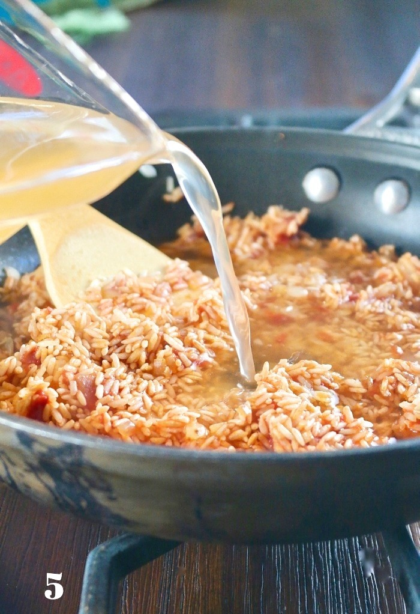

Recipe Information
- Preparation time: 20 minutes
- Cooking time: 45 minutes
- Servings: 6 people
- Difficulty: Intermediate
Ingredients
- 3 cups long-grain parboiled rice
- 4 large tomatoes (blended)
- 2 red bell peppers (blended)
- 1 medium onion (chopped)
- 2 cups chicken stock
- 1/4 cup vegetable oil
- 2 teaspoons curry powder
- 2 teaspoons thyme
- 1 teaspoon ground ginger
- 2 seasoning cubes
- Salt to taste
Instructions
- Rinse the rice thoroughly and set aside.
- Blend the tomatoes, red bell peppers, and half of the onion into a smooth puree.
- Heat vegetable oil in a pot, add the chopped onions, and sauté until translucent.
- Pour in the blended mixture and cook for 10–15 minutes until the raw taste disappears.
- Add curry powder, thyme, ground ginger, seasoning cubes, and salt. Stir well.
- Pour in the chicken stock and bring to a boil.
- Add the rice, stir, cover with foil or parchment paper, and reduce the heat to low.
- Cook until the rice is tender and has absorbed the sauce, stirring occasionally to prevent burning.
- Fluff the rice with a fork and serve hot.
Tips:
For an authentic smoky flavor, allow the rice to slightly burn at the bottom of the pot during the final minutes of cooking—this is called the “party jollof” effect. You can also add mixed vegetables or fried plantains as a side for extra flavor and color.


Nutritional Facts (per serving – approx.)
- Calories: 420 kcal
- Carbohydrates: 70 g
- Protein: 8 g
- Fat: 12 g
- Saturated Fat: 2 g
- Cholesterol: 0 mg (may vary if cooked with meat)
- Sodium: 850 mg
- Fiber: 3 g
- Sugar: 6 g
- Vitamin A: 35% of daily value
- Vitamin C: 40% of daily value
- Iron: 10% of daily value